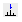

pp3d
NAME
pp3d - Perform peak picking (3D)
pp - Open peak picking control dialog (1D, 2D, 3D)
DESCRIPTION
3D peak picking can be started from the command line or from the peak picking dialog box. The latter can be opened with the command pp:
In this dialog window, you can set the following options:
- Append peaks to list: When it is checked, the found peaks are appended to a possibly existing list. When it is unchecked, a new list is created [pp3d append].
- Discard new peak(s) if already in list: Check this option to avoid duplicate peaks [pp3d noduplicates].
- Export results as XwinNmr peak list In addition to TopSpin XML format, the result is also stored in XWIN-NMR format (file peak.txt) [pp3d txt]. This file is typically used with XWIN-NMR AU programs.
Furthermore, you can set the following peak picking parameters:
Region parameters
Here you can set the region limits From (F1P) and To (F2P) for the F3, F2 and F1 direction. Only peaks within this region will be picked. Note that the limits can be specified in the text fields or set with the button Set to to:
- Full range - full spectrum.
- Displayed range - range displayed in the data window.
- Range defined by stored parameters - range stored in parameters F1P/F2P (To store displayed region: right-click in the data window and select Save display region to).
- Most recent range stored in peak list - range on which last automatic peak picking was done (Only active when peak picking was already done).
Sensitivity parameters
Here you can set the peak picking parameters MI and MAXI, which are also used for 1D peak picking. Note that MI can also be interactively set to the current value of MI, or the lowest contour level, using the Set to button. Furthermore, the parameter PPRESOL for peak picking resolution can be set.
Miscellaneous parameters
Here you can set the following parameters:
- PPMPNUM - Maximum number of picked peaks. Note that 0 or no value specified means unlimited.
- PPIPTYP - Peak picking interpolation type (parabolic or none).
- PSIGN - The sign of the picked peaks (positive, negative or both).
To start peak picking click OK.
The peak picking progress will be shown in the TopSpin status line. When the peak picking process has finished:
- The number of found peaks is displayed in the status line. Note that if the option Append peaks to list is checked, only additional peaks are reported as found.
- The peaks and parameters are stored in the processing directory.
To view the peak list, click the Peaks tab of the data window toolbar.
The peak picking dialog window has two extra buttons:
- Reset all to: Allows you to reset all parameters to the stored parameters or to the most recent values stored in the peak list. Note that the stored parameters and the parameters in the peak list can be different since parameters can also be set with edp or from the command line. However, right after peak picking they are the same.
- Start manual picker: To switch to interactive peak [picking mode (equivalent to clicking  in the TopSpin upper toolbar).
The options specified in square brackets in the dialog window and further options can also be specified on the command line. For example:
- pp append: Open peak picking dialog with the Append.. option checked.
- pp noduplicates: Open peak picking dialog with the Discard new peaks.. option checked.
- pp silent: Perform peak picking on the displayed region with the last stored options (no dialog). Equivalent to the command pps.
- pp nodia: Perform peak picking on the last stored region with the last stored options (no dialog).
- pp append noduplicates nodia: Perform peak picking on the last stored region with the specified options.
The pp command can be used on 1D, 2D or 3D data. It recognizes the data dimensionality and opens a dialog box with the appropriate options and parameters.
INPUT PARAMETERS
Set from the pp dialog box, with edp or by typing f1p, mi etc.:
F1P - low field (left) limit of the peak picking region in F3, F2 and F1
F2P - high field (left) limit of the deconvolution region F3, F2 and F1
MI - minimum relative intensity (cm)
MAXI - maximum relative intensity (cm)PC - peak picking sensitivity
PPRESOL - peak picking resolution
PPMPNUM - maximum number of picked peaks
PPIPTYP - Interpolation type
PSIGN - peak sign (pos, neg, or both)
INPUT FILES
<dir>/data/<user>/nmr/<name>/<expno>/pdata/<procno>/
3rrr - real processed 3D data
proc - F3 processing parameters, including peak picking parameters
OUTPUT FILES
<dir>/data/<user>/nmr/<name>/<expno>/pdata/<procno>/
procs - F3 processing parameters, including peak picking parameters
peaklist.xml - 3D peak list in XML format
peak.txt - 3D peak list in TXT format
<userhome>/<.topspin-hostname/prop/
globals.prop - peak picking setup